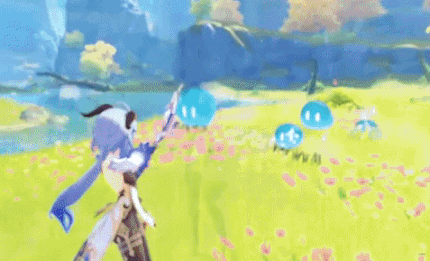
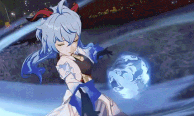

Informazioni sul personaggio
Ganyu è un personaggio giocabile di Genshin Impact, 5 stelle, che utilizza l'elemento Element Cryo e utilizza l'arco.
È un'Adeptus mezzo Qilin sotto contratto con l'Archon Geo Morax e serve come segretaria generale del Liyue Qixing.
Seppur il suo aspetto insolito, per via delle corna, il suo carattere e assai quiete. Per via della sua timidezza, infatti,
non riesce a dire mai di no se qualcuno gli chiede dell'aiuto extra a lavoro, arrivando a compiere i suoi doveri fino a tardi.
Molto spesso, per ciò, capita che possa addormentarsi all'impiedi...
Abilità, Skill e Burst


